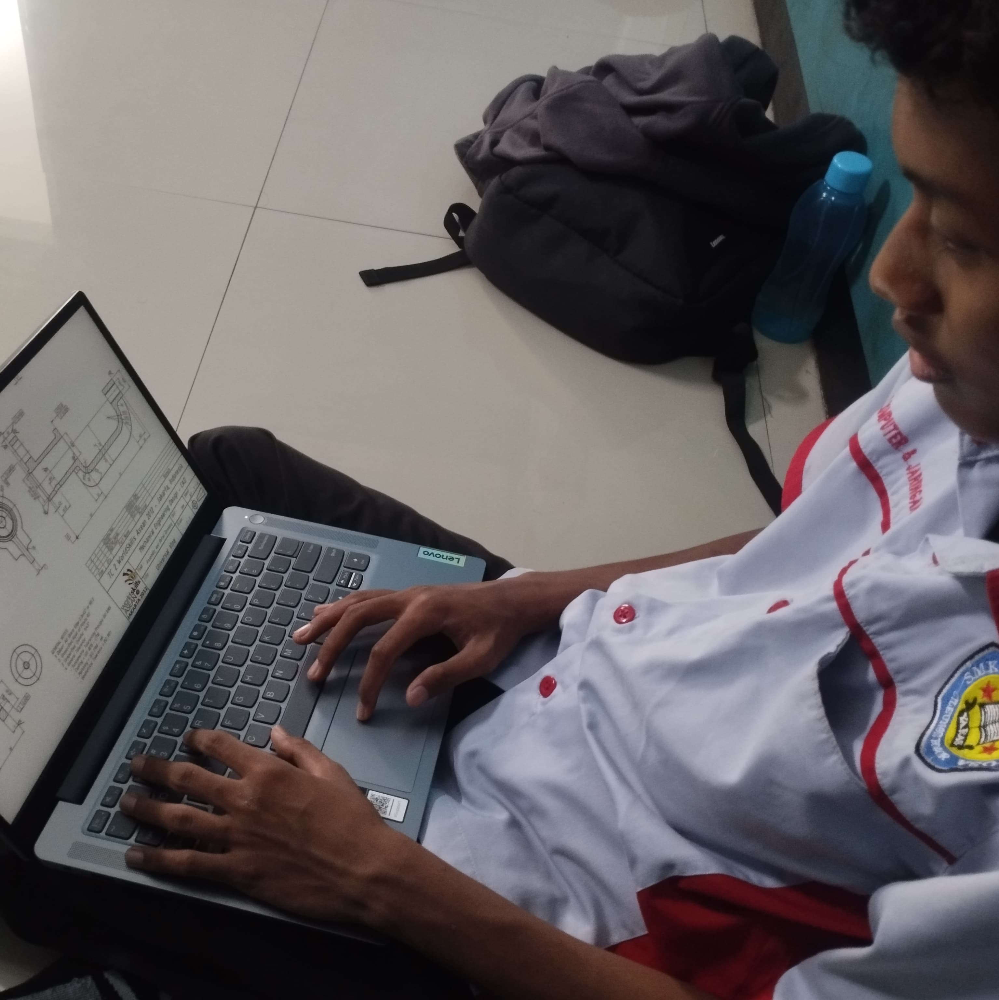
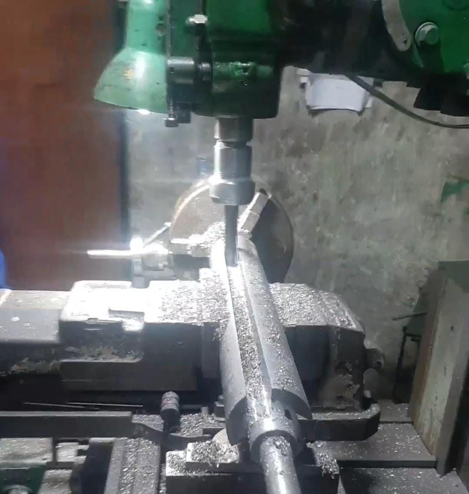
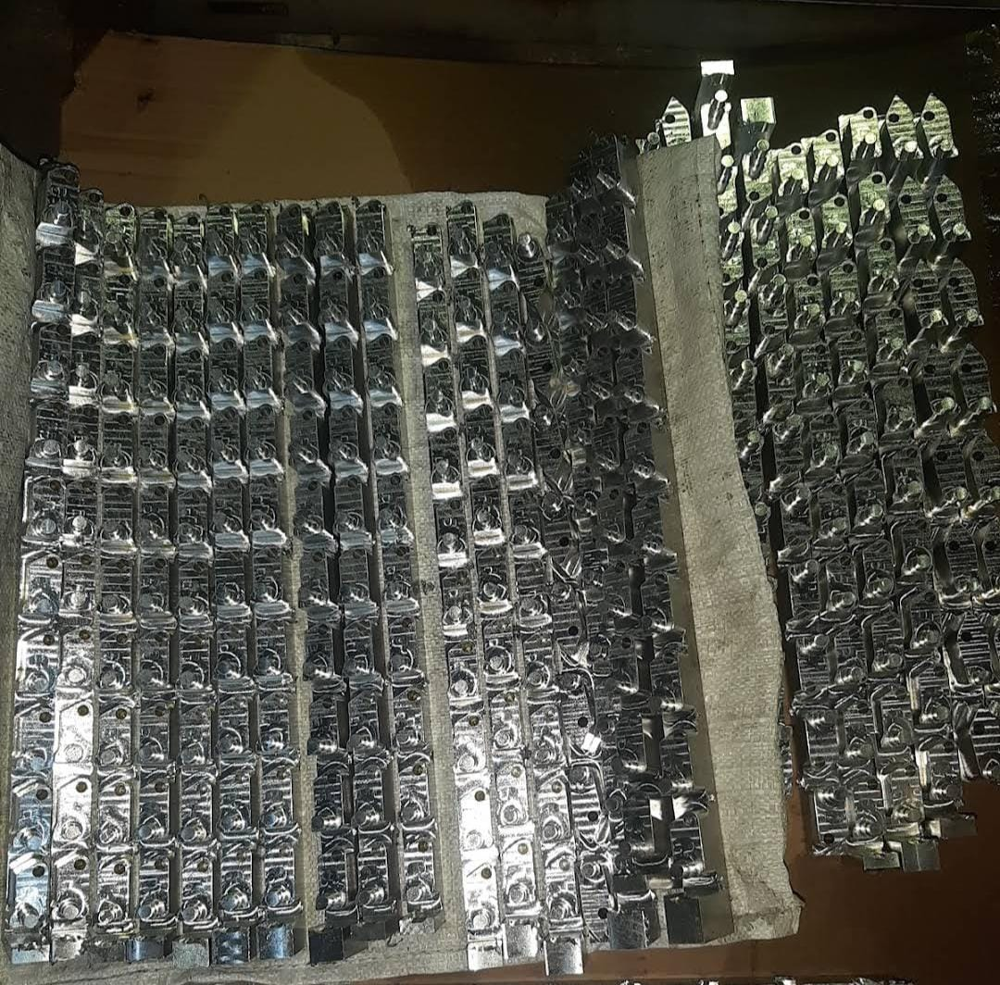
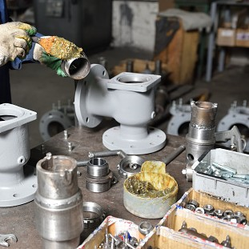
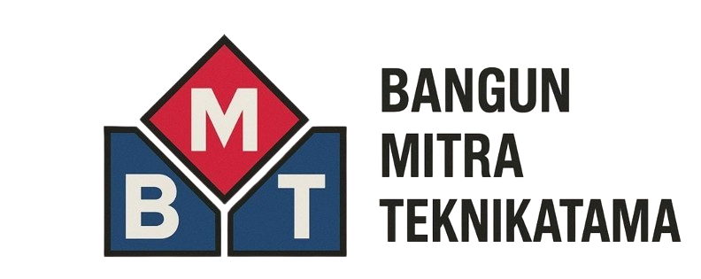

PT.Bangun Mitra Teknikatama (BMT) adalah perusahaan yang bergerak pada bidang Engineering, Machining, Manufacturing & Fabrication. Sejak didirikan, kami berkomitmen untuk memberikan solusi teknik terbaik dengan standar kualitas tinggi untuk memenuhi kebutuhan industri lokal maupun nasional. Dengan dukungan tim profesional berpengalaman dan peralatan modern, kami mampu menangani berbagai proyek mulai dari pembuatan komponen mesin presisi, perakitan sistem manufaktur, hingga konstruksi struktur logam berskala besar. Kami melayani berbagai sektor industri seperti otomotif, pertambangan, konstruksi, dan energi. Kami percaya bahwa keberhasilan klien adalah prioritas utama kami. Oleh karena itu, kami senantiasa mengedepankan ketepatan waktu, efisiensi biaya, dan kualitas produk dalam setiap layanan yang kami tawarkan.
Menjadi perusahaan rekayasa teknik dan manufaktur terdepan di Indonesia yang unggul dalam inovasi, kualitas, dan kepuasan pelanggan.
PT BMT ahli dalam menjalankan 4 bidang utama

Mengembangkan gambar teknis, perhitungan kekuatan material, serta memastikan desain memenuhi kebutuhan fungsi dan estetika.

Proses pembentukan menggunakan mesin presisi seperti bubut, dll.

Mencakup proses produksi secara menyeluruh dari bahan mentah menjadi produk akhir.

Tahap penyatuan dan perakitan berbagai komponen menjadi satu bentuk utuh.


Email: -
Kontak: -
Tekan tombol untuk menanyakan info lebih lanjut!
(Anda akan diarahkan ke email kami)
*untuk saat ini hanya contoh